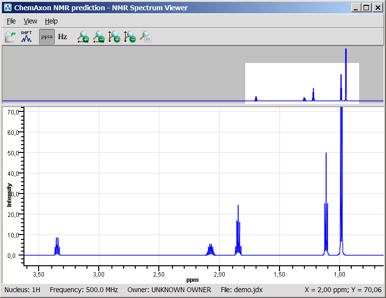
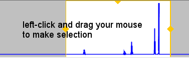
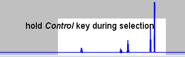
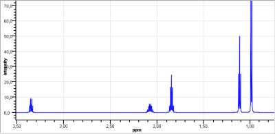
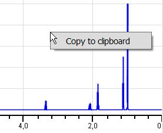
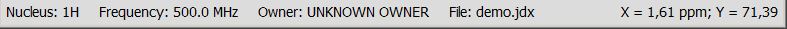

NMR Spectrum Viewer - ChemAxon's tool to view Nuclear Magnetic Resonance spectra
Version 5.10.1
Contents
NMR Spectrum Viewer
NMR Spectrum Viewer is part of the NMR Calculation group. It is able to display Nuclear Magnetic Resonance spectra saved in JCAMP-DX format (*.jdx). The opened spectrum can be zoomed in, exported to PDF files, or simply copy-pasted as images.

The NMR Spectrum Viewer window consists of a menu, toolbar, two panels, and a status bar.
NMR Spectrum Viewer Menu
The menu contains File, View, and Help elements.
File menu
- File > Import from JCAMP-DX...: Open an NMR Spectrum in JCAMP-DX format to display it in NMR Spectrum Viewer. Clicking on this menu item will launch the Open dialog window. Select an NMR spectrum in JCAMP-DX format and click on Open.
- File > Exit: Close application.
View menu
- View > Measurement Unit: Display NMR spectrum in one of the following units:
- View > Display Local Maximum Places: NMR Spectrum Viewer can display local maximum places as spectrum labels when the JCAMP-DX file contains
PEAKTABLE information.
- View > Horizontal Zoom In: Zoom in on NMR Spectrum along the X-axis.
- View > Horizontal Zoom Out: Zoom out on NMR Spectrum along the X-axis.
- View > Vertical Zoom In: Zoom in on NMR Spectrum along the Y-axis.
- View > Vertical Zoom Out: Zoom out on NMR Spectrum along the Y-axis.
- View > Reset Zoom: Restore spectrum zooming to full spectrum view.
Help
- Help > Help Contents: Open this help page in your browser.
Back to top
NMR Spectrum Viewer Toolbar
You can use toolbar elements to access selected NMR Spectrum Viewer menu items.
|
|
Import from JCAMP-DX... |
|
Display Local Maximum Places |
|
Measurement Unit |
|
Horizontal Zoom In |
|
Horizontal Zoom Out |
|
Vertical Zoom In |
|
Vertical Zoom Out |
|
Reset Zoom |
Back to top
NMR Spectrum Viewer Panels
Panels can be copied separately as images by right-clicking on the appropriate panel and selecting Copy to clipboard action.
Spectrum View Panel
 
Displays the whole imported spectrum.
- If you want to zoom in on specific region of the spectrum, use left-click and drag or ctrl + left-click and drag on NMR Spectrum Preview Panel. The background of the selected region will be highlighted in white, while unselected region of the spectrum will turn to grey.
- You can move the selection window by left-clicking into the middle of the selection; hold mouse button while moving the selection, and release button to place it.
- You can resize the selection window if you grab-and-drag the yellow side frame around the highlighted area.
Spectrum Display Panel

Displays the appropriate zoom region of the spectrum. Move your mouse pointer over the NMR Spectrum Display Panel and use mouse-wheel to zoom in and out horizontally, ctrl+mouse-wheel to zoom in and out verically on the NMR spectrum.
Back to top
NMR Spectrum Viewer Pop-up Menu

Right-clicking on any panel pops up a menu with the following element:
- Copy to clipboard: The panel in question will be copied to the clipboard.
Back to top
NMR Spectrum Viewer Status Bar
The status bar of NMR Spectrum Viewer displays the X and Y coordinates of mouse cursor position, and the following data stored in the opened JCAMP-DX file:

- Nucleus;
- Frequency,
- Owner;
- File.
Back to top
Copyright© 2011-2012 ChemAxon Ltd.
All rights reserved.